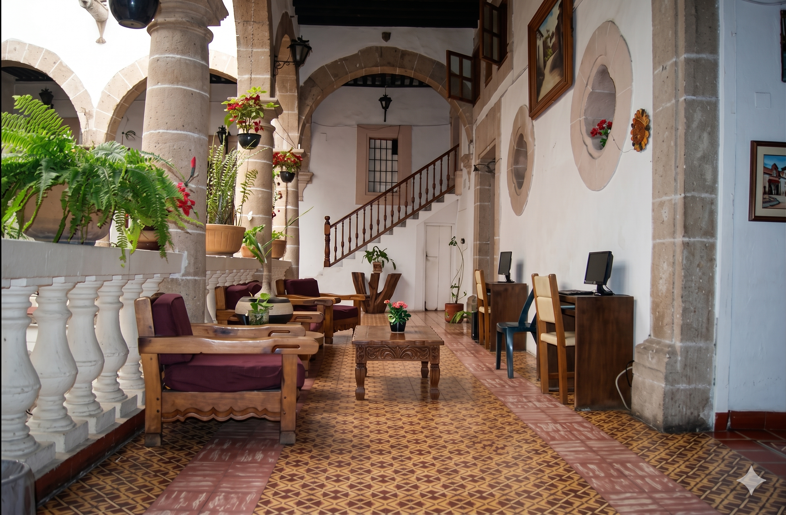

Descubra el encanto colonial y la magia de Taxco en el Hotel Casa Grande.

Nuestro hotel está enclavado en la montaña ofreciéndoles vistas impresionantes y panorámicas de la ciudad. Taxco es reconocido por su rica tradición platera y su encanto colonial, lo cual brinda una experiencia única a todos nuestros visitantes.
Durante su estancia en el Hotel Casa Grande, podrán disfrutar de la belleza natural y la riqueza cultural de Taxco.
Disfruta tus vacaciones en nuestro Hotel con alberca en Taxco de Alarcón.